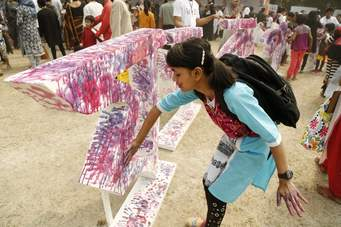

আন্তর্জাতিক মাতৃভাষা দিবস
একুশে ফেব্রুয়ারি:
বাংলাদেশ সহ পশ্চিমবঙ্গ তথা সমস্ত বাংলা ভাষা ব্যবহারকারী জনগণের গৌরবোজ্জ্বল একটি দিন। এটি শহীদ দিবস ও
আন্তর্জাতিক মাতৃভাষা দিবস হিসাবেও সুপরিচিত। বাঙালি জনগণের ভাষা আন্দোলনের মর্মন্তুদ ও গৌরবোজ্জ্বল স্মৃতিবিজড়িত একটি দিন হিসেবে চিহ্নিত হয়ে আছে।

১৯৫২ সালের এই দিনে (৮ ফাল্গুন, ১৩৫৮) বাংলাকে পূর্ব পাকিস্তানের অন্যতম রাষ্ট্রভাষা করার দাবিতে আন্দোলনরত ছাত্রদের ওপর পুলিশেরগুলিবর্ষণে কয়েকজন তরুণ শহীদ হন। তাদের মধ্যে অন্যতম হলো রফিক, জব্বার, শফিউল, সালাম, বরকত সহ অনেকেই। তাই এ দিনটি শহীদ দিবস হিসেবে চিহ্নিত হয়ে আছে। ২০১০ খ্রিষ্টাব্দে জাতিসংঘ কর্তৃক গৃহীত সিদ্ধান্ত মোতাবেক প্রতিবছর একুশে ফেব্রুয়ারি বিশ্বব্যাপী আন্তর্জাতিক মাতৃভাষা দিবস পালন করা হয়।
ইতিহাস:
প্রেক্ষাপট :
১৯৪৭ সালে দেশভাগের সময় পূর্ব বাংলার বাংলা ভাষাভাষী ৪ কোটি ৪০ লাখ জনগণ পাকিস্তান অধিরাজ্যের অংশ হয়ে যায়।[১] পাকিস্তানের সরকার, প্রসাশন, সামরিক বাহিনীতে পাকিস্তানের পশ্চিম প্রান্তের আধিপত্য দেখা দেয়।[২] করাচিতে জাতীয় শিক্ষা সম্মেলনে শুধুমাত্র উর্দুকে রাষ্ট্রভাষা এবং স্কুল ও মিডিয়াতে ব্যবহার করার প্রস্তাব করা হয়। সঙ্গে সঙ্গে পূর্ব প্রান্তে এর প্রতিবাদ দেখা দেয়।[৩][৪] ঢাকায় ছাত্ররা
তমদ্দুন মজলিসের প্রতিষ্ঠাতা আবুল কাসেমের নেতৃত্বে র্যালি বের করে। বৈঠকে বাংলাকে পাকিস্তানের একটি সরকারি ভাষা এবং পূর্ব বাংলার শিক্ষার মাধ্যম করার সিদ্ধান্ত নেয়া হয়। [৫] তবে, পাকিস্তান পাবলিক সার্ভিস কমিশন অনুমোদিত বিষয় তালিকা থেকে বাংলাকে বাদ দেয় এবং একই সঙ্গে মুদ্রার নোট এবং স্ট্যাম্প থেকে বাংলা মুছে ফেলা হয়। পাকিস্তানের কেন্দ্রীয় শিক্ষা মন্ত্রী ফজলুর রহমান উর্দুকে পাকিস্তানের একমাত্র রাষ্ট্র ভাষা করতে ব্যাপক প্রস্তুতি নেন।[৬] এতে বাঙালি জনগণ বিক্ষুব্ধ হয় এবং ছাত্রদের একটি বড় অংশ আনুষ্ঠানিকভাবে বাংলাকে একটি সরকারী ভাষা করার দাবিতে ১৯৪৭ সালের ৮ ডিসেম্বর ঢাকা কলেজ ও ঢাকা বিশ্ববিদ্যালয়ের ছাত্ররা ঢাকা বিশ্ববিদ্যালয় ক্যাম্পাসে জমায়েত হয়। এজন্য ছাত্ররা ঢাকায় মিছিল ও সমাবেশের আয়োজন করে।

বাংলা ভাষা আন্দোলন
বঙ্গীয় সমাজে বাংলা ভাষার অবস্থান নিয়ে বাঙালির আত্ম-অম্বেষায় যে ভাষাচেতনার উন্মেষ ঘটে, তারই সূত্র ধরে বিভাগোত্তর পূর্ববঙ্গের রাজধানী ঢাকায় ১৯৪৭ সালের নভেম্বর-ডিসেম্বরে ভাষা-বিক্ষোভ শুরু হয়। ১৯৪৮ সালের মার্চে এ নিয়ে সীমিত পর্যায়ে আন্দোলন হয় এবং ১৯৫২ সালের একুশে ফেব্রুয়ারি তার চরম প্রকাশ ঘটে।
ঐদিন সকালে ঢাকা বিশ্ববিদ্যালয়ের ছাত্ররা ১৪৪ ধারা অমান্য করে রাজপথে বেরিয়ে এলে পুলিশ তাদের ওপর গুলি চালায়। এতে আবুল বরকত, আবদুল জব্বার, আবদুস সালামসহ কয়েকজন ছাত্রযুবা হতাহত হন। এ ঘটনার প্রতিবাদে ক্ষুব্ধ ঢাকাবাসী ঢাকা মেডিকেল কলেজ হোস্টেলে সমবেত হয়। নানা নির্যাতন সত্ত্বেও ছাত্রদের পাশাপাশি সাধারণ মানুষ প্রতিবাদ জানাতে পরের দিন ২২ ফেব্রুয়ারি পুনরায় রাজপথে নেমে আসে। তারা মেডিকেল কলেজ হোস্টেল প্রাঙ্গণে শহীদদের জন্য অনুষ্ঠিত গায়েবি জানাজায় অংশগ্রহণ করে। ভাষাশহীদদের স্মৃতিকে অমর করে রাখার জন্য ২৩ ফেব্রুয়ারি এক রাতের মধ্যে মেডিকেল কলেজ হোস্টেল প্রাঙ্গণে গড়ে ওঠে একটি স্মৃতিস্তম্ভ, যা সরকার ২৬ ফেব্রুয়ারি গুঁড়িয়ে দেয়। একুশে ফেব্রুয়ারির এই ঘটনার মধ্য দিয়ে ভাষা আন্দোলন আরও বেগবান হয়। ১৯৫৪ সালে প্রাদেশিক পরিষদ নির্বাচনে যুক্তফ্রন্ট জয়লাভ করলে ৭ মে অনুষ্ঠিত গণপরিষদের অধিবেশনে বাংলাকে পাকিস্তানের অন্যতম রাষ্ট্রভাষা হিসেবে স্বীকৃতি দেওয়া হয়। বাংলাকে পাকিস্তানের দ্বিতীয় রাষ্ট্রভাষা হিসাবে স্বীকৃতি দিয়ে সংবিধানে পরিবর্তন আনা হয় ১৯৫৬ সালের ২৯ ফেব্রুয়ারি।
১৯৮৭ সালের ২৬ ফেব্রুয়ারি জাতীয় সংসদে 'বাংলা ভাষা প্রচলন বিল' পাশ হয়। যা কার্যকর হয় ৮ মার্চ ১৯৮৭ সাল থেকে।
প্রতিবাদ:
ঢাকায় ১৯৫২ সালের ২১শে ফেব্রুয়ারি প্রতিবাদ মিছিল।
১৯৫২ সালের হিসেবে পাকিস্তানের সংখ্যাগরিষ্ঠ নাগরিক ছিল বাঙালী, যারা মোট নাগরিকের প্রায় ৫৪%। ঐ সালের ২১ ফেব্রুয়ারি (৮ ফাল্গুন ১৩৫৮) শুধুমাত্র উর্দুকে জাতীয় ভাষা হিসেবে ঘোষণার প্রতিবাদে বাঙালী ছাত্ররা সরকারের বিরুদ্ধে সোচ্চার হয়ে ওঠে। সকাল নয়টায় ১৪৪ ধারা ভঙ্গ করে ঢাকা বিশ্ববিদ্যালয় প্রাঙ্গনে জড়ো হতে শুরু করে। সশস্ত্র পুলিশ বেষ্টিত ক্যাম্পাসে বিশ্ববিদ্যালয়ের উপাচার্য এবং অন্যান্য কর্মকর্তারা উপস্থিত ছিলেন। সোয়া এগারোটার দিকে ছাত্ররা বিশ্ববিদ্যালয় গেটে জড়ো হয়ে প্রতিবন্ধকতা ভাঙার চেষ্টা করে।[১] ছাত্রদের একটি দল ঢাকা মেডিকেল কলেজের দিকে দৌড় দেয় এবং বাকিরা পুলিশ পরিবেষ্টিত ক্যাম্পাসে মিছিল করে। উপাচার্য পুলিশকে গুলি চালানো বন্ধ করতে এবং ছাত্রদেরকে এলাকা ছেড়ে চলে যাওয়ার আদেশ দেন। ছাত্রদের চলে যাবার সময় পুলিশ ১৪৪ ধারা লঙ্ঘনের জন্য কিছু ছাত্রকে গ্রেফতার করে। গ্রেফতারের সংবাদ পেয়ে বিক্ষুব্ধ ছাত্ররা পূর্ব বাংলা গণপরিষদ অবরোধ করে সেখানে তাদের প্রস্তাব উপস্থাপনের দাবি জানায়। ছাত্রদের একটি দল বিল্ডিঙের মধ্যে দ্রুত ঢোকার চেষ্টাকালে পুলিশ গুলি চালায় এবং তাতে সালাম, রফিক, বরকত, জব্বার, শফিউর সহ অনেক ছাত্র নিহত হয়।[১][৭] হত্যাকাণ্ডের সংবাদ ছড়িয়ে পড়লে সারা শহর জুড়ে বিক্ষোভ ছড়িয়ে পড়ে। দোকানপাট, অফিস ও গনপরিবহন বন্ধ করে দেওয়া হয় এবং ধর্মঘট শুরু হয়। আইনসভায়, মনোরঞ্জন ধর, বসন্তকুমার দাস, শামসুদ্দিন আহমেদ এবং ধীরেন্দ্রনাথ দত্ত সহ ছয় বিধায়ক মুখ্যমন্ত্রী নুরুল আমিনকে আহত ছাত্রদের দেখতে হাসপাতালে যাওয়ার দাবি জানান এবং শোকের চিহ্ন হিসেবে গণপরিষদ মুলতবির দাবি করেন।[৮] মাওলানা আবদুর রশীদ তর্কবাগীশ, শরফুদ্দীন আহমেদ, শামসুদ্দীন আহমেদ খন্দকার এবং মশিউদ্দিন আহমেদ সহ সরকারি দলের কিছু সদস্য সমর্থন দেন।[৮] তবে নুরুল আমিন এ প্রস্তাব প্রত্যাখ্যান করেন।[১][৮]
প্রতিক্রিয়া;
সংবিধান সংশোধন :১৯৫৪ সালের ৭ মে গণপরিষদে মুসলিম লীগের সমর্থনে বাংলা আনুষ্ঠানিকভাবে রাষ্ট্রভাষার মর্যাদা লাভ করে। ১৯৫৬ সালের ২৯ ফেব্রুয়ারি বাংলা পাকিস্তানের দ্বিতীয় জাতীয় ভাষা হিসাবে স্বীকৃতি পায় এবং সংবিধানের অনুচ্ছেদ ২১৪ (১) পুনর্লিখিত হয় এভাবে "পাকিস্তানের রাষ্ট্রভাষা হবে উর্দু এবং বাংলা"। তবে, আইয়ুব খানের নেতৃত্বে গঠিত সামরিক সরকার উর্দুকে একমাত্র জাতীয় ভাষা হিসেবে পুনরস্থাপনের চেষ্টা চালায়। ৬ জানুয়ারি ১৯৫৯-এ তার সরকার একটি আনুষ্ঠানিক বিবৃতি দিয়ে ১৯৫৬ সালের সংবিধানের দুই রাষ্ট্র ভাষা নীতি সমর্থনের সরকারি অবস্থান পুনর্বহাল করে।[৯]
তবে, আইয়ুব খানের নেতৃত্বে গঠিত সামরিক সরকার উর্দুকে একমাত্র জাতীয় ভাষা হিসেবে পুনরস্থাপনের চেষ্টা চালায়। ৬ জানুয়ারি ১৯৫৯-এ তার সরকার একটি আনুষ্ঠানিক বিবৃতি দিয়ে ১৯৫৬ সালের সংবিধানের দুই রাষ্ট্র ভাষা নীতি সমর্থনের সরকারি অবস্থান পুনর্বহাল করে।[৯]
আন্তর্জাতিক মাতৃভাষা দিবস হিসেবে স্বীকৃতি:
কানাডার ভ্যাঙ্কুভার শহরে বসবাসরত দুই বাঙালি রফিকুল ইসলাম এবং আব্দুস সালাম প্রাথমিক উদ্যোক্তা হিসেবে একুশে ফেব্রুয়ারিকে আন্তর্জাতিক মাতৃভাষা দিবস হিসেবে ঘোষণার আবেদন জানিয়েছিলেন জাতিসংঘের মহাসচিব কফি আনানের কাছে ১৯৯৮ খ্রিষ্টাব্দে। [১] ১৯৯৯ খ্রিষ্টাব্দের ১৭ নভেম্বর অনুষ্ঠিত ইউনেস্কোর প্যারিস অধিবেশনে একুশে ফেব্রুয়ারিকে আন্তর্জাতিক মাতৃভাষা দিবস হিসেবে ঘোষণা করা হয় [২] এবং ২০০০ সালের ২১ ফেব্রুয়ারি থেকে দিবসটি জাতিসঙ্ঘের সদস্যদেশসমূহে যথাযথ মর্যাদায় পালিত হচ্ছে।[৩]  ২০১০ সালের ২১ অক্টোবর বৃহস্পতিবার জাতিসংঘ সাধারণ পরিষদের ৬৫তম অধিবেশনে এখন থেকে প্রতিবছর একুশে ফেব্রুয়ারি আন্তর্জাতিক মাতৃভাষা দিবস পালন করবে জাতিসংঘ। - এ-সংক্রান্ত একটি প্রস্তাব সর্বসম্মতভাবে পাস হয়েছে। আন্তর্জাতিক মাতৃভাষা দিবস পালনের প্রস্তাবটি সাধারণ পরিষদের ৬৫তম অধিবেশনে উত্থাপন করে বাংলাদেশ। মে মাসে ১১৩ সদস্যবিশিষ্ট জাতিসংঘের তথ্যবিষয়ক কমিটিতে প্রস্তাবটি সর্বসম্মতভাবে পাস হয়।[৪]
২০১০ সালের ২১ অক্টোবর বৃহস্পতিবার জাতিসংঘ সাধারণ পরিষদের ৬৫তম অধিবেশনে এখন থেকে প্রতিবছর একুশে ফেব্রুয়ারি আন্তর্জাতিক মাতৃভাষা দিবস পালন করবে জাতিসংঘ। - এ-সংক্রান্ত একটি প্রস্তাব সর্বসম্মতভাবে পাস হয়েছে। আন্তর্জাতিক মাতৃভাষা দিবস পালনের প্রস্তাবটি সাধারণ পরিষদের ৬৫তম অধিবেশনে উত্থাপন করে বাংলাদেশ। মে মাসে ১১৩ সদস্যবিশিষ্ট জাতিসংঘের তথ্যবিষয়ক কমিটিতে প্রস্তাবটি সর্বসম্মতভাবে পাস হয়।[৪]
উদ্যাপন:
১৯৫২ সাল থেকে প্রতি বছর এ দিনটি জাতীয় ‘শোক দিবস’ হিসেবে উদ্যাপিত হয়ে আসছে। বর্তমানে ঢাকা বিশ্ববিদ্যালয়ের পরিচালনায় ২১ ফেব্রুয়ারি রাত ১২টা এক মিনিটে প্রথমে রাষ্ট্রপতি এবং পরে একাদিক্রমে প্রধানমন্ত্রী, মন্ত্রিপরিষদের সদস্যবৃন্দ, ঢাকা বিশ্ববিদ্যালয়ের উপাচার্য, শিক্ষকবৃন্দ, ঢাকাস্থ বিভিন্ন দূতাবাসের কর্মকর্তাবৃন্দ, রাজনৈতিক নেতৃবৃন্দ, বিভিন্ন প্রতিষ্ঠান ও সংগঠন এবং সর্বস্তরের জনগণ কেন্দ্রীয় শহীদ মিনারে এসে শহীদদের প্রতি শ্রদ্ধার্ঘ্য নিবেদন করেন।  এ সময় আমার ভাইয়ের রক্তে রাঙানো একুশে ফেব্রুয়ারি, আমি কি ভুলিতে পারি গানের করুণ সুর বাজতে থাকে।
বাংলাদেশ স্বাধীন হওয়ার পর একুশে ফেব্রুয়ারি সরকারি ছুটির দিন হিসেবে ঘোষিত হয়। এদিন শহীদ দিবসের তাৎপর্য তুলে ধরে রেডিও, টেলিভিশন এবং সাংস্কৃতিক সংগঠনগুলো বিভিন্ন অনুষ্ঠানের আয়োজন করে। দেশের সংবাদপত্রগুলিও বিশেষ ক্রোড়পত্র প্রকাশ করে। বাংলা একাডেমি ফেব্রুয়ারি মাস জুড়ে ঢাকায় একুশে বইমেলার আয়োজন করে।
স্মৃতিরক্ষা: কেন্দ্রীয় শহীদ মিনার
এই আন্দোলন স্মৃতিরক্ষায় গণহত্যার স্থানে একটি আনুষ্ঠানিক এবং প্রতীক ভাস্কর্য শহীদ মিনার স্থাপন করা হয়েছে। দিনটি বাংলাদেশে এবং পরে ভারতের পশ্চিমবঙ্গে শহীদ দিবস হিসাবে পালিত হয়। এই দিনটি বাংলাদেশে সরকারী ছুটি ঘোষণা করা হয়েছে।
ইউনেস্কো ২১শে ফেব্রুয়ারি আন্তর্জাতিক মাতৃভাষা দিবস হিসাবে পালনের সিদ্ধান্ত নেয়। ইউনেস্কোর ১৯৯৯ সালের ১৭ নভেম্বরের সাধারণ অধিবেশনে সর্বসম্মতিক্রমে বাংলাদেশের জমা দেয়া এবং অন্যান্য ২৮ টি দেশের সমর্থনে জমা দেওয়া খসড়া প্রস্তাবটি গ্রহণ করে।